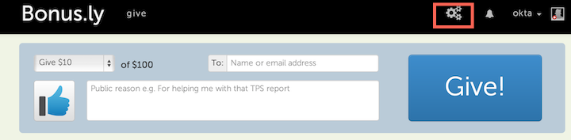
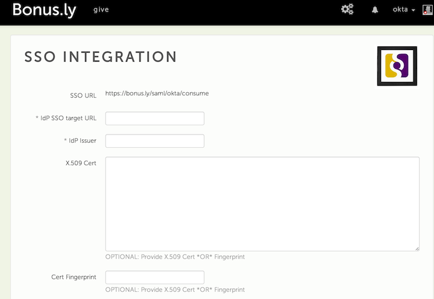
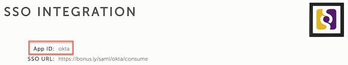
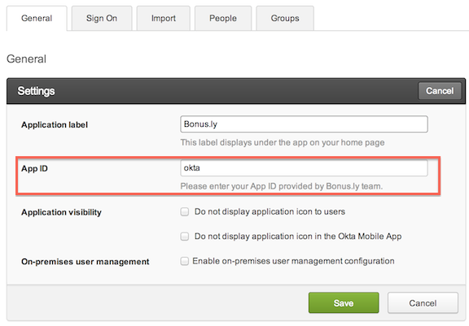

This setup might fail without parameter values that are customized for your organization. Please use the Okta Administrator Dashboard to add an application and view the values that are specific for your organization.
Sign in to Bonus.ly and click Settings icon, as shown below.

Next, select Integrations > Single Sign on > Edit. 
Copy and paste the following into the IdP SSO target URL field: Sign into the Okta Admin dashboard to generate this value.
Copy and paste the following into the IdP Issuer field: Sign into the Okta Admin dashboard to generate this value.
Copy and paste the following into the Cert Fingerprint field: Sign into the Okta Admin dashboard to generate this value.
Click Save. After saving, the SSO settings appear along with your App ID. In the example below, the App ID is okta. Copy the App ID from Bonus.ly and paste it into the Okta configuration page as shown in step 7. 
In Okta, select the General tab for Bonus.ly App, and paste the App ID that you copied in step 6 into the App ID field. 